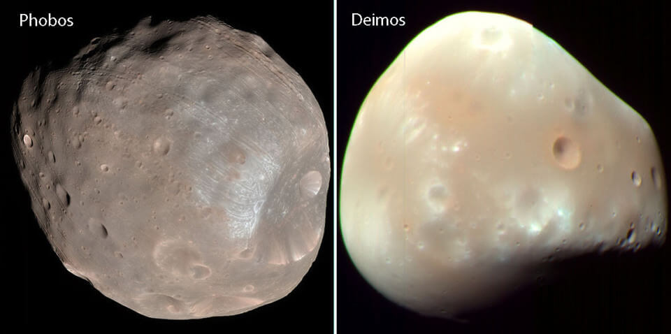
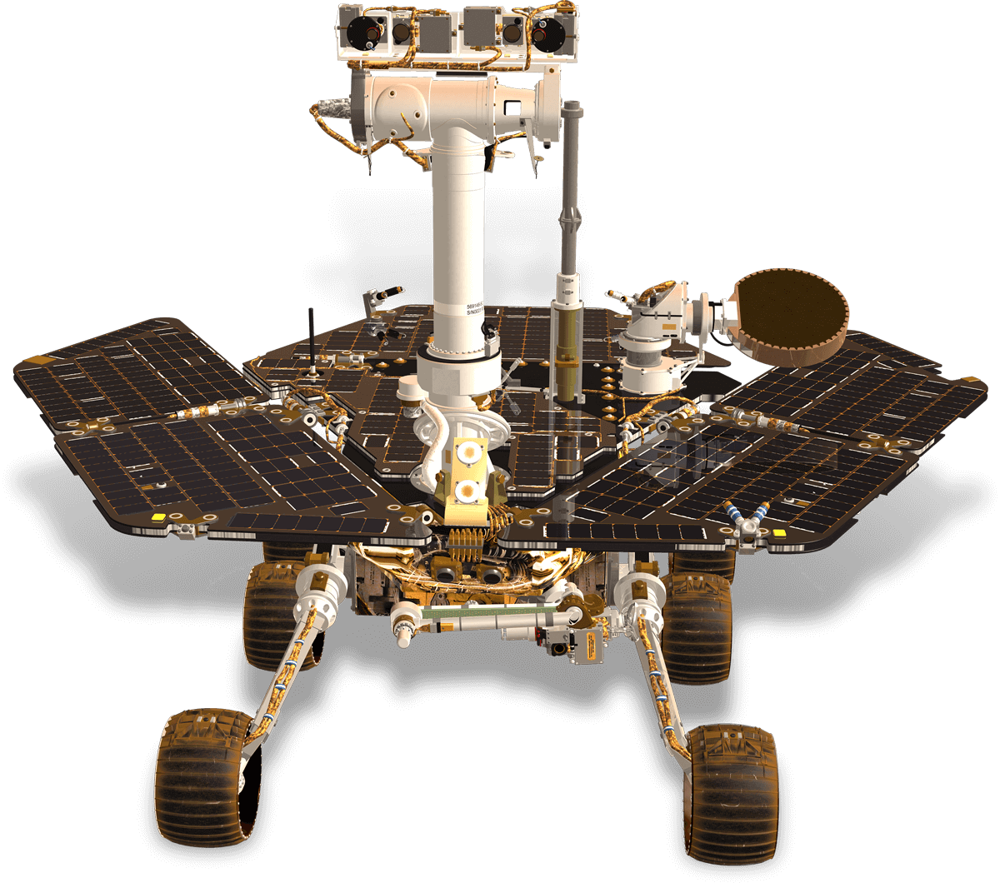

Structure
| Layer | Composition |
|---|---|
| Crust | Iron-rich basaltic rock |
| Mantle | Solid silicate rock |
| Core | Partially liquid iron, nickel and sulphur |
Crust
The outer crust is rich in silicon, oxygen, iron, magnesium,
aluminum, calcium, and potassium, all of which could be used in the
development of future human outposts on Mars.
Mantle
Silicate mantle was once very active, giving rise to many of the
planet's distinctive surface features, but which now appears to be
dormant.
Core
Like Earth, Mars has undergone differentiation, resulting in a
dense core primarily comprising iron and nickel, but with around 17%
sulfur, which renders the core partially liquid.
Moons

Mars has two small natural satellites, Phobos and Deimos, that orbit very close to the planet. These moons may be captured asteroids. It has been predicted that in about 50 million years, Phobos will either crash into Mars' surface or break up into a ring structure around the planet.
Noticeable point

Mars is the focus of intense study, with two rovers (exploration rover Opportunity and science laboratory Curiosity) operating on the surface, while three international missions orbit the planet: NASA Mars Odyssey and Mars Reconnaissance Orbiter and ESA's Mars Express.